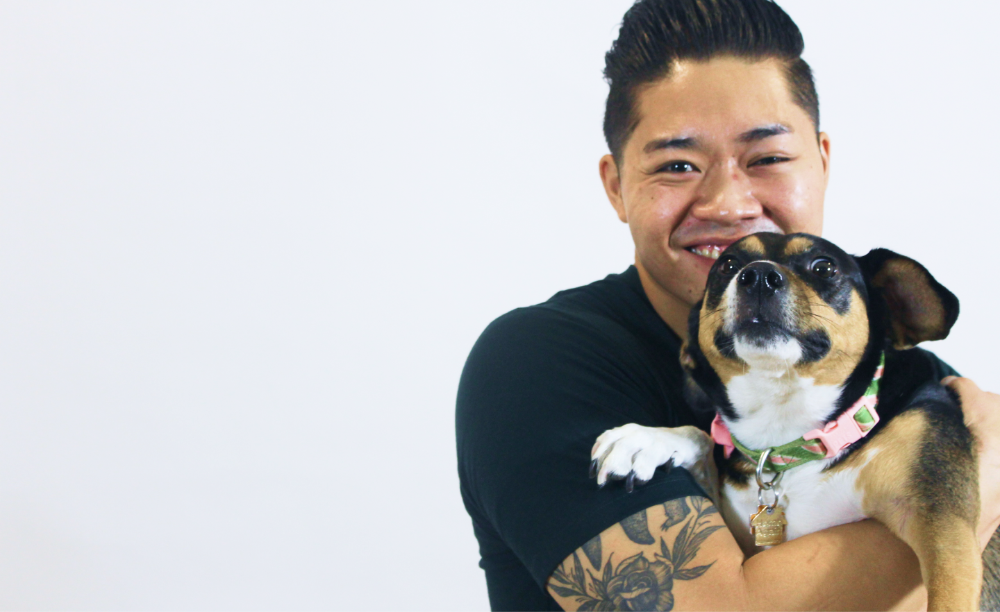
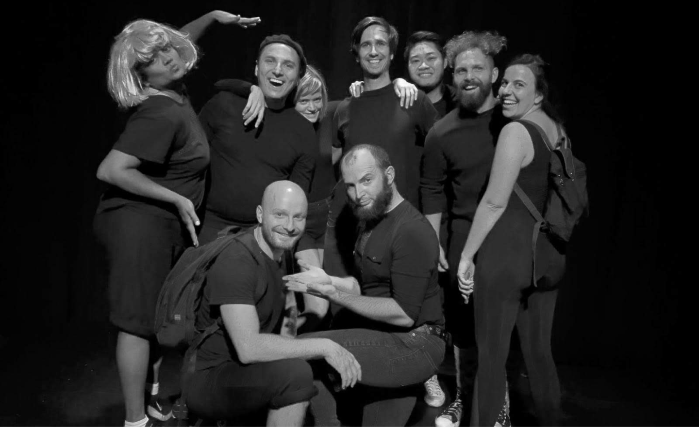
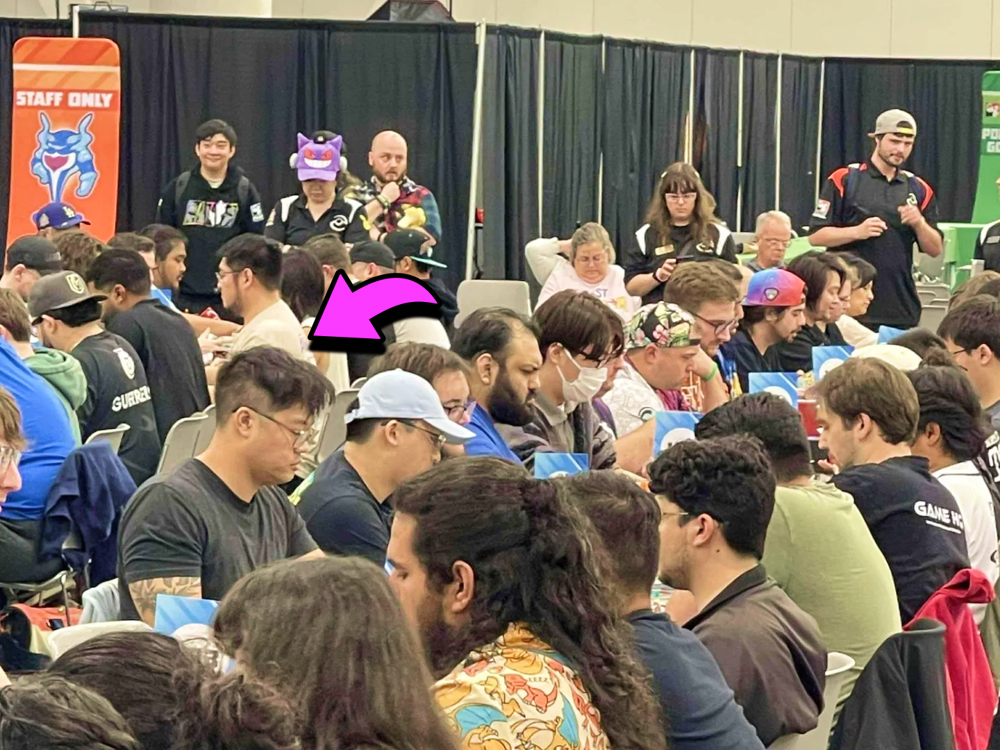

About Me
Hi, I'm Joseph
The intersection of all my experiences so far informs the way I collaborate and iterate.
The intersection of all my experiences so far informs the way I collaborate and iterate.

When I worked directly with people, I learned that I was most effective when I took time to understand their needs. I found that oftentimes people kind of already know what the solutions are, my role was to help fill those gaps and probe further on what makes them frustrated.
When I managed programs, I learned how to collaborate with different stakeholders within my team and at other agencies. What became clear was that everyone saw the same problem through a different lens, and it's easier to get funding (and solve problems) when you take time to gather data and learn about a problem first before you get into solutioning.
To me, becoming a UX Designer meant combining what I enjoyed the most from my career so far: learning what makes people tick, collaborating with others, and seeing your solutions make an impact in people's lives.
Since changing careers I've graduated with my Masters of Science in Human-Computer Interaction at DePaul University, had stints in both consultancy and product teams, and became involved in civic tech through the now defunct Code for America Brigade system.
Outside of work, I've spent time pursuing a bunch of niche interests. I've performed theatrical clown in LA, and improv in Chicago. I used to co-host/edit a podcast. Currently, I'm doing some writing and competing nationally in the Play Pokemon TCG circuit.

